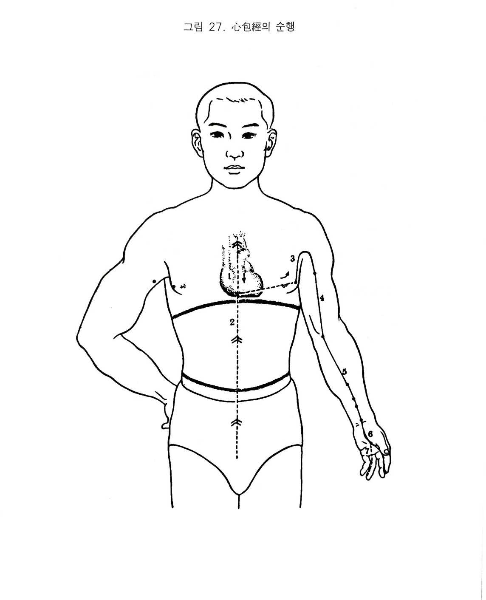

수궐음심포경
11. 수궐음심포경
1) 수궐음심포경
심포경은 족소음신경의 분질를 받아 흉중에서 시작하여 거기서 나와 심포경에 속하고 하향하여 횡격막을 통과해서 상. 중. 하의 삼초에 락한다.
다른 지락은 흉부를 따라 흉협에 분포하여 주중의 곡택에 이른다. 다시 하행하여 전완에 이르고 두 근건 사이로 주행하여 수장으로 가서 중지내측을 따라 그 말단에서 끝난다.
또 다른 지락은 장중 노궁에서 제4지의 끝에 이르러 수소양삼초경과 교회한다.
2) 심포경의 병증
(1) 소화기계
심포경락은 상. 중. 하초에 락하므로 습열이 울결되면 목황이 발생한다.
(2) 순환기계
심은 “군주지관“이고 심포락은 심을 대행한다.
심포락은 흉중에서 시작하여 하행하여 삼초를 돌고, 또한 흉협으로 나가고 있다. 따라서 심포락에 사기가 들어오면 가슴이 답답하거나 혹은 가슴이 아프고 천식과 같은 발작도 일어난다(심장성천식). 실열이 있으면 정충. 심계 등이 심해진다.
(3) 흉협복통류
심포경락은 단중에서 흉협으로 이어져 나가고 있으므로 본 경락이 병들면 흉협이 그득하고 무엇이 끼인 듯하며 결린 증상이 나타난다.
(4) 운동기계
심포경락은 협근 - 액와 - 상완내측 - 장중 - 중지미단을 통과한다. 따라서 본 경락이 병들면 액와부에서는 종장이 발생하고, 상완 및 전완에서는 동통이 발생하며 구거불능굴신 하거나 손바닥에서는 열감 등이 발생한다.
(5) 안이비인후구계
심은 심포경의 군주이며 심포락은 목에 락하므로 심포락이 실하면 목적이 발생한다.
(6) 비뇨기계
심은 혈을 주관 및 통솔하며 심과 소장은 표리관계를 이루는데, 소장은 청탁을 배설시키는 작용을 한다. 따라서 심포가 허약하면 뇨에 피가 섞여 나오며 심포실열이 있으면 대. 소변이 잘 나오지 않는다.
(7) 정신계
심은 혈맥을 주관하므로 심과심포가 허약해지면 사지말단에 혈액순환 장애가 생겨(화쇠토불운) 사지가 연약해지며 두항강직이 발생한다. 심의 오지는 “소”이므로 심포에 실증이 오면 자주 웃는 정신이상이 발생하거나 가슴. 손바닥. 발바닥 등에 열감의 증상이 나타난다.
(8) 기타
심은 혈맥을 관장 및 통솔하므로 심포가 허약해지면 하혈하고, 면부는 심의 상태를 반영하므로 심혈이 실열하면 면적이 발생한다.

오수혈
중충(정,목)
가운데 손가락의 손톱이 붙어 있는 안쪽각진 곳에서 1푼쯤 떨어진 곳이니 옆으로 엄지손가락쪽에서 새끼손가락 쪽으로 찌른다. 오행학상으로는 심포의 허증에 보하는 혈이요 심포와 간에 같이 영향을 주는 혈이다. 이 지단에 있는 정혈들은 급증이나
극증에 사혈하므로서 탁효를 볼수 있어 심장의 급한 증세나 인후염, 편도선염, 이하선염 등에ㅔ 효과적인 혈이다.
노궁(형,화)
가운데 손가락을 자연스럽게 구부려서 그 손가락끝이 닿는 곳을 눌러보면 둘째 셋째으 손바닥뼈 사이가 된다. 거기서 가장 깊은 함중을 찾는 것이 옳은 취혈이라 본다. 본혈은 화경의 화혈이므로 오행학상 심포경의 주격인 혈이기 때문에 심. 심포경의
일체증세 이외에 타경과의 관계조절에 긴요한 혈이며 신열이나 수장열 등의 해열, 냉증에 대한 온기회복에도 쓰이고 정신계의 이상에도 효과적인 혈로서 단혈로서 진중히 조기함도 좋다. 기타 코피나는 경우나 입병 등에도 쓰여지지만 민간요법으로 노궁근처의
자락(따는 것)으로서 어린이의 복학 치료에 응용되고 있다.
대릉(수,토,원)
손목안쪽의 중앙을 만져보면 힘줄과 힘줄의 사이 뼈와 뼈의 사이가 대릉혈이요 완골과 척골의 끝 부분이며 수근골과의 사이가 되며 요완굴근과 장장근의 사이가 된다. 대릉은 심포경으 주격인 원혈인데 심경의 원혈인 신문과의 선발문제다. 그 이유는 군화와 상화의 차이는
있지만 같은 화경의 원혈이기 때문이다. 소고를 첨언한다면 심경은 군주격인 상징적존재요 상화인 심포는 제상격으로 보기 때문에 심. 소장자체의 이상에는 신문을 적용하되 타장부(타경)의 정신. 신경성 측면에서의 조절이나 화기의 과부족 관계에는 심포경의 원혈인 대릉을
쓰는 것이 이상적 방편이다. 기타 발열, 두통, 심장질환 외에 정신계 질환인 신경쇠약, 히스테리, 전간, 광증 등에 좋은 혈이요, 오행학상으로 심이나 심포경의 실증에는 사하는 혈로서도 유명하다.
간사(경,금)
팔꿈치에서는 7촌, 손목에서는 3촌의 두 힘줄 사이가 된다. 입이 돌아가는 구안와사에 쓰여짐은 널리 알려진 바이지만 고래로 이 혈을 잘 조절하여 보니 정신이상이 어느정도 바로 잡아지는 것을 볼 수 있고 언어장애나 구안와사, 월경불순에 잘 듣는 것은 이혈이 경금혈이기
때문이라 생각된다.
곡택(합,수)
팔을 반쯤 구부리고 그 중알부를 만져보면 딱딱한 힘줄이 만져진다. 그 힘줄을 두 손가락으로 쥐면 윗쪽의 함중이 폐경의 척택혈이고 아랫쪽 즉 중앙부의 함중이 곡택혈이며 더 아랫 쪽의 뼈에 걸리는 곳이 심경의 소해혈이 된다. 본혈은 화경중의 수혈이므로 신수경이 허해서
상충하는 수허화실 증세나 몸에 열이 난다든가 심장부가 아픈 경우, 잘 놀래고 마음이 불안한 상태 또는 심. 신 양경을 조절하는 데에 쓰임이 본혈의 특성이다.